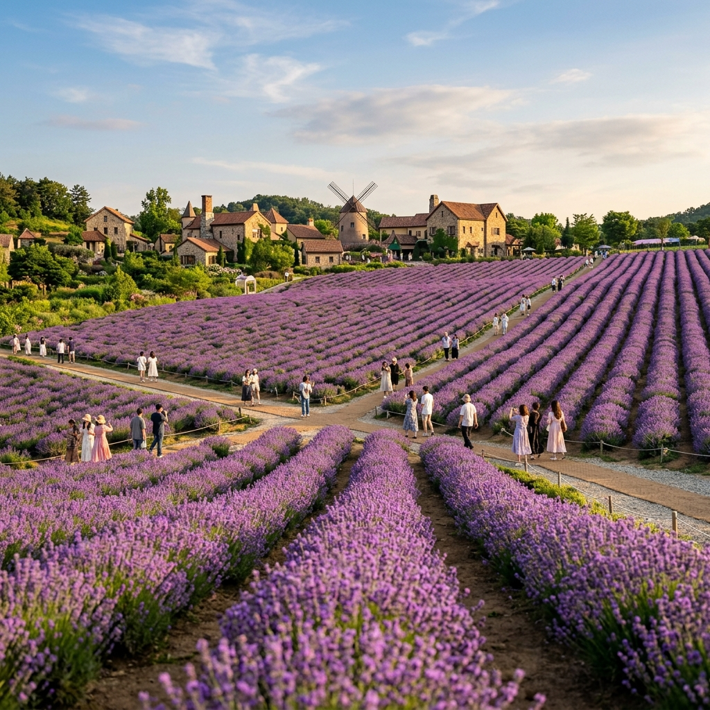
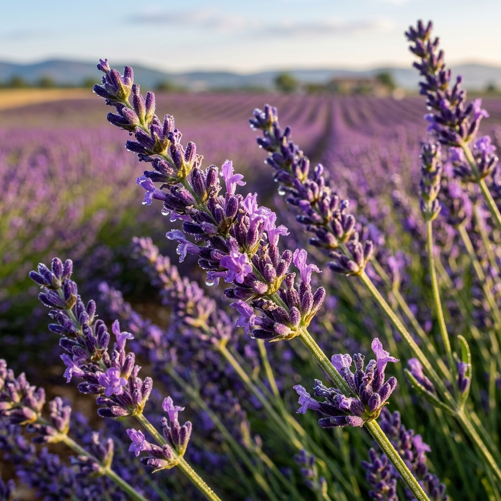

포천 허브아일랜드 라벤더 2026: 13만 평 보랏빛 물결 라데봄 축제 입장료·핑크 샌드 인생샷 명당 총정리
경기도에서 프로방스를 만나는 곳이 있다. 서울에서 불과 1시간 거리의 포천 허브아일랜드가 5월 하순부터 6월 말까지 라벤더 축제 '라데봄'으로 물든다. 13만 평이라는 상상을 초월하는 규모의 허브 정원 전체에 라벤더가 피어오르는 시즌, 공원 곳곳에 보랏빛 향기가 가득하다. 더불어 야간에는 연중 점등하는 핑크 라이트 페스티벌이 겹쳐 낮과 밤 모두 전혀 다른 감동을 준다. 2026년 라데봄 축제 기간(5월 20일~6월 30일), 입장료, 핑크 샌드 포토존, 주변 맛집까지 — 허브아일랜드 완벽 공략 가이드를 지금 시작한다.
🌿 허브아일랜드란? — 13만 평 허브 왕국의 정체
포천 허브아일랜드(Herb Island)는 경기도 포천시 신북면 삼정리에 위치한 복합 허브 테마파크다. 1998년 개장 이래 국내에서 손꼽히는 허브 전문 공원으로 자리잡았으며, 부지 면적이 약 13만 평에 달한다. 이 규모는 서울 종로구 창덕궁(약 59,000평)의 2배가 넘는 수치다.
주요 시설로는 허브 온실, 허브 농장, 핑크 샌드 테마존, 물놀이 시설, 허브 카페, 허브 상품 판매관 등이 있다. 단순한 꽃밭이 아니라 허브를 주제로 한 쇼핑·식음·체험이 결합된 복합 공간이다.
가장 유명한 프로그램은 라벤더 증류 체험으로, 직접 라벤더 에센셜 오일을 추출해 소량의 순수 오일을 만들어 가져갈 수 있다. 시즌 한정으로 운영되므로 사전 예약이 필수다.
연간 프로그램 흐름
- 봄(3~4월): 라데봄 시즌 1 (데이지·튤립)
- 여름(5~6월): 라데봄 시즌 2 (라벤더·데이지) ← 2026년 현재 시즌
- 가을(9~10월): 코스모스·황화코스모스
- 겨울(12~2월): 핑크 라이트 페스티벌 집중 시즌
📅 2026년 라데봄(라벤더) 축제 — 핵심 정보 총정리
| 항목 |
내용 |
| 축제명 |
허브아일랜드 라데봄 (라벤더 & 데이지) |
| 기간 |
2026년 5월 20일(수) ~ 6월 30일(화) |
| 운영 시간 |
평일 10:00~21:00 / 주말·공휴일 09:00~22:00 |
| 입장료 (성인) |
평일 10,000원 / 주말 12,000원 |
| 입장료 (청소년/어린이) |
평일 8,000원 / 주말 10,000원 (36개월~중학생) |
| 36개월 미만 |
무료 |
| 주차비 |
무료 |
| 위치 |
경기도 포천시 신북면 청신로947번길 35 |
| 공식 홈페이지 |
herbisland.co.kr |
💜 라벤더 절정 예상 시기: 2026년 5월 하순~6월 중순. 개화 속도는 그해 봄 기온에 따라 달라지므로, 출발 3~5일 전 허브아일랜드 공식 인스타그램(@herb_island_)에서 개화 현황을 확인하는 것이 가장 정확하다.

포천 허브아일랜드 라벤더 전경 / AI 제작 이미지
📍 핵심 구역별 완전 탐방 가이드 — 어디서 어떻게 즐기나
허브아일랜드 13만 평을 처음 방문하면 어디서부터 시작해야 할지 막막할 수 있다. 구역별로 나누어 최적 동선을 안내한다.
① 라벤더 농장 (메인 구역)
입장 후 좌측으로 이어지는 라벤더 농장이 핵심 구역이다. 폭 약 2~3m의 라벤더 두둑이 수십 줄로 펼쳐지며, 두둑 사이를 걸으면 라벤더 향이 코끝을 가득 채운다. 사진은 낮게 앉아 라벤더 군락을 배경으로 찍는 것이 가장 효과적이다. 이 구간에 별도 포토존 마커가 설치되어 있어 혼자서도 인생샷을 건지기 쉽다.
② 핑크 샌드 테마존
분홍빛 모래가 깔린 이국적인 테마존으로, 허브아일랜드의 숨겨진 인생샷 명소다. 핑크 컬러 파라솔과 선베드가 배치되어 있어 해외 리조트 느낌의 사진을 찍을 수 있다. 의상 준비가 중요한데, 화이트·라벤더·민트 계열 옷차림이 핑크 샌드와 가장 잘 어울린다.
③ 허브 온실 (사계절 운영)
비가 오거나 더위가 심할 때 피신하기 좋은 실내 공간이다. 온실 내부에서는 프로방스 스타일 인테리어와 함께 다양한 허브 화분, 드라이플라워 작품들을 감상할 수 있다.
④ 허브 카페 & 체험관
라벤더 아이스크림, 라벤더 라떼, 허브 소금빵 등 공원 내 카페에서 계절 한정 허브 먹거리를 즐길 수 있다. 라벤더 아이스크림(약 5,000원)은 예쁜 보라색이 사진 피사체로도 좋아 구매율이 높다.
🌙 핑크 라이트 페스티벌 — 밤의 허브아일랜드는 또 다른 세계
허브아일랜드의 야간 명물은 단연 '핑크 라이트 페스티벌'이다. 공원 전체에 약 13만 구의 LED 조명이 설치되어 해가 지면 분홍·보라·파랑의 불빛 바다로 탈바꿈한다. 라데봄 시즌 야간 방문 시 라벤더 향기와 조명이 결합되어 특별한 몽환적 분위기가 만들어진다.
야간 입장은 별도 추가 요금 없이 낮 입장권으로 이용 가능하다. 단, 야간에만 방문하려면 저녁 6시 이후 야간 전용 입장이 가능한지 공식 홈페이지에서 확인하길 권한다 (시즌별 정책 변경 가능).
💡 야간 촬영 꿀팁: 핑크 라이트 아래에서 스마트폰 야간 모드 설정 시 색온도를 따뜻하게(3,500~4,000K) 설정하면 조명 본연의 분홍빛이 과노출 없이 담긴다. 삼각대를 가져오면 1~2초 장노출로 조명 궤적을 찍는 작품 사진이 가능하다.
허브아일랜드 핑크 라이트 페스티벌 야경 / AI 제작 이미지
🚗 찾아가는 법 & 주차 전략 — 서울서 1시간
자가용 이용
- 서울 출발: 43번 국도 → 포천 방향 → 신북면 (약 1시간 10분~1시간 30분, 교통 상황에 따라 상이)
- 의정부 출발: 약 40분
- 경춘고속도로 이용 시: 포천 IC 하차 후 신북면 방향 약 15분
주차 안내
- 대형 전용 주차장 완비, 주차비 무료
- 주말 오전 11시 이후에는 입구 주차장이 만차될 수 있음
- 오전 9시 30분 이전 도착을 추천 (인파도 적고 빛도 좋음)
대중교통
- 서울 상봉터미널 또는 동서울터미널 → 포천 시외버스 → 신북 정류장 하차 → 택시 또는 버스 환승
- 다소 불편하므로 자가용 방문을 강력 추천
💰 입장료 절약 꿀팁 — 최대 20% 할인받는 방법
허브아일랜드 입장료는 성인 주말 기준 12,000원으로 적지 않다. 하지만 아래 방법으로 할인받을 수 있다.
| 할인 방법 |
할인 내용 |
비고 |
| 네이버 예약 사전 구매 |
약 10~20% 할인 |
현장 구매 대비 절감 |
| 제휴 신용카드 |
카드사별 할인 (5~15%) |
현대·신한 카드 등 |
| 경기도 통합 관광 패스 |
동반 1인 할인 |
경기관광 앱 확인 |
| 장애인·국가유공자·65세 이상 |
평일 8,000원 입장 |
신분증 지참 필수 |
🌿 라벤더의 향기 — 식물학적 효능과 아로마 체험
라벤더(Lavandula angustifolia)는 꿀풀과(Lamiaceae) 식물로, 지중해 연안 원산지다. 에센셜 오일에 포함된 리나로올(Linalool)과 아세트산 리나릴(Linalyl acetate)이 진정·수면 유도·항불안 효과를 낸다는 것이 다수의 임상 연구에서 확인되었다.
허브아일랜드 라벤더 농장에서 피어나는 라벤더는 주로 '몬스테드' 품종과 '라벤딘' 품종이다. 라벤딘(Lavandula x intermedia)은 진정 라벤더와 스파이크 라벤더의 교잡종으로, 꽃 수확량이 많고 향이 강해 오일 생산에 많이 활용된다. 허브아일랜드의 증류 체험 프로그램은 이 라벤딘 품종에서 에센셜 오일을 직접 추출한다.
라벤더 향을 최대한 즐기려면 오전 10시~오후 1시 사이를 추천한다. 햇볕이 가열된 오전 중반이 방향성 화합물 휘발이 가장 활발해 공중 라벤더 향이 가장 짙다.

라벤더 꽃 클로즈업 / AI 제작 이미지
🍽️ 허브아일랜드 주변 맛집 & 포천 연계 관광
허브아일랜드 내부 식음
- 허브 레스토랑: 허브 뷔페 및 단품 요리 (인기 메뉴: 허브 치킨 샐러드, 라벤더 파스타)
- 허브 카페: 라벤더 라떼·아이스크림·소금빵
- 입장 후 퇴장 시 재입장이 어려울 수 있으므로 내부에서 식사 해결 권장
포천 인근 맛집 (차량 10~20분 거리)
- 포천 이동 갈비: 포천의 대표 향토 음식. 이동면 일대 이동 갈비 전문점들이 밀집해 있으며, 서울 강남 가격의 절반으로 즐길 수 있다.
- 산정호수 민물매운탕: 포천 산정호수 주변 수변 식당에서 메기·쏘가리 매운탕을 맛볼 수 있다.
포천 연계 관광지
- 산정호수 (드라이브 및 보트 체험, 허브아일랜드에서 15분)
- 포천 아트밸리 (화강암 채석장을 활용한 복합 문화 공간, 천문과학관 연계)
- 한탄강 국가지질공원 (유네스코 세계지질공원, 주상절리 캠핑)
📊 허브아일랜드 방문 전 핵심 체크리스트
| 항목 |
권장 사항 |
| 예약 |
사전 온라인 예약으로 입장료 절감 (네이버·공식 홈페이지) |
| 방문 시기 |
라벤더 절정: 5월 하순~6월 중순 |
| 방문 시간 |
평일 오전 10시 이전 또는 주말 9시 개장 직후 |
| 의상 |
화이트·연보라 계열 (핑크 샌드 포토존 대비) |
| 준비물 |
자외선 차단제, 모자, 편한 신발, 보조배터리 |
| 증류 체험 |
사전 예약 필수 (현장 예약 불가 가능성) |
#포천허브아일랜드
#라벤더축제2026
#라데봄
#경기도라벤더
#핑크샌드
#핑크라이트페스티벌
#포천여행
#서울근교드라이브
#6월꽃여행
#허브아일랜드입장료